Parti’nin dünya görüşü, onu hiç anlayamayan insanlara çok daha kolay dayatılıyordu. (…) Her şeyi yutuyorlar ve hiçbir zarar görmüyorlardı çünkü tıpkı bir mısır tanesinin bir kuşun bedeninden sindirilmeden geçip gitmesi gibi, yuttuklarından geriye bir şey kalmıyordu. George Orwell’in kült kitabı Bin Dokuz Yüz Seksen Dört, yazarın geleceğe ilişkin bir kâbus senaryosudur. Bireyselliğin yok edildiği, zihnin kontrol altına alındığı, insanların makineleşmiş kitlelere dönüştürüldüğü totaliter bir dünya düzeni, romanda inanılmaz bir hayal gücüyle, en ince ayrıntısına kadar kurgulanmıştır. Geçmişte ve günümüzde dünya sahnesinde tezgâhlanan oyunlar düşünüldüğünde, ütopik olduğu kadar gerçekçi bir romandır Bin Dokuz Yüz Seksen Dört. Güncelliğini hiçbir zaman yitirmeyen bir başyapıttır; yalnızca yarına değil, bugüne de ilişkin bir uyarı çığlığıdır.
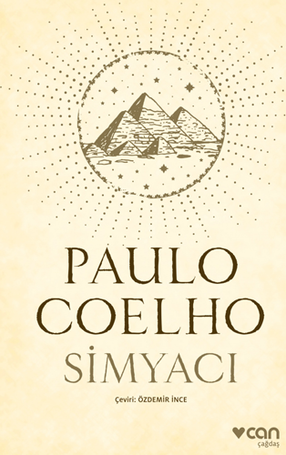
Simyacı, dünyaca ünlü Brezilyalı yazar Paulo Coelho’nun üçüncü romanı. 1996 yılından bu yana Türkiye’de de çok okundu, çok sevildi, çok övüldü bu kitap. Bir büyük Doğu klasiği olan Mevlana’nın ünlü Mesnevi’sinde yer alan küçük bir öyküden yola çıkarak yazılan bu roman, yüreğinde çocukluğunun çırpınışlarını taşıyan okurlar için bir “klasik” yapıt haline geldi. Simyacı, İspanya’dan kalkıp Mısır Piramitlerinin eteklerinde hazinesini aramaya giden Endülüslü çoban Santiago’nun masalsı yaşam öyküsü. Ama aynı zamanda bir “nasihatname”; “Yazgına nasıl egemen olacaksın? Mutluluğunu nasıl kuracaksın?” gibi sorulara yanıt arayan bir yaşam ve ahlak kılavuzu. Mistik bir peri masalına benzeyen bu romanın, dünyanın dört bir yanında bunca sevilmesinin gizi, kuşkusuz bu kılavuzluk niteliğinden kaynaklanıyor. Simyacıyı okumak, herkes daha uykudayken şafak vakti uyanıp, güneşin doğuşunu izlemeye benziyor. .
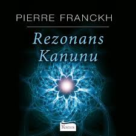
Kuantum düşünce tekniğinin temelinde yer alan Rezonans Kanunu’na göre sizi isteklerinizi gerçekleştirmekten alıkoyan sınırlar yalnızca kalbinizdedir. Pierre Franckh bu kitapta arzularınızı bloke edebilme potansiyeline sahip iç ve dış etkileri nasıl ortadan kaldıracağınızı, hedeflerinize dair pozitif bir imgelemeyi nasıl yapacağınızı, nasıl güçlü rezonans alanı kuracağınızı, düşünce gücünüz ve hislerinizle hayatınızda olmasını istediğiniz değişiklikleri nasıl elde edeceğinizi anlatıyor.
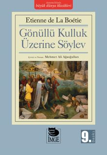
Yakın dostu, büyük Fransız düşünürü Montaigne'in, "Kanımca, La Boétie çağımızın en büyük insanıdır" diye söz ettiği Etienne de La Boétie'nin Gönüllü Kulluk Üzerine Söylev'i siyasal düşünce tarihinde yeni bir yaklaşımın öncüsü olmuştur. Siyaset olgusunu iktidar ilişkileri biçiminde algılayan La Boétie, bugün bile kafaları kurcalayan, "insanların nasıl olup da itaat etmekle kalmayıp boyun eğmeyi, hatta kulluk etmeyi arzuladıkları" sorununu yapıtının odak noktasına yerleştirir. La Boétie, iktidar olgusunu ve bunun ideolojik dayanaklarını (geniş anlamda hegomonyayı) irdelemekle yetinmez; iktidar ilişkileri ağının en üst düzeyde kuramsallaşmış biçimine, bir başka deyişle devlet sorununa yönelir. Tiran'ın ya da "Bir"in iktidarından yola çıkarak XVI. yüzyıl Fransası'nda artık açıkça belirginleşmeye başlayan modern devletin gerçeğine ulaşır. Bu bakımdan Gönüllü Kulluk Üzerine Söylev, gerçekte, devlet egemenliğinin niteliği üzerine yapılmış bir söylevdir.
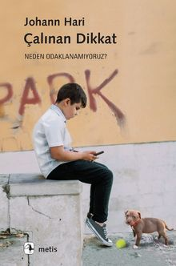
Gazeteci-yazar Johann Hari, son yıllarda bir şeylere odaklanmakta ne kadar zorlandığını fark ettiğinde suçu önce kendisinde aramış. Ama sonra aslında çoğu insanın aynı sorundan muzdarip olduğunu görmüş. Böylece meseleyi araştırmaya, uzmanlarla görüşmeye başladığında çok daha derin ve kapsamlı nedenlerin söz konusu olduğunu keşfetmiş. Çalınan Dikkat’te Hari bu nedenleri detaylarıyla ele almanın yanı sıra, dikkatimizi geri kazanmanın yollarına kafa yoruyor. Bireysel çabaların, yani sırf kendi hayatlarımızda birtakım değişiklikler yaparak sorunu çözmeye çalışmanın ancak bir yere kadar etkili olabileceğini vurgulayan Hari, “dikkatimizi bizden çalan kuvvetlerle kolektif olarak yüzleşip onları değişime zorlamamız gerektiğini” belirtiyor. Bunun ise acil bir mesele olduğunu, çünkü dikkati dağılmış bir toplumun, önündeki en önemli sorunlara bile odaklanamayacağını ve çözüm üretemeyeceğini söylüyor. “Böyle az uyuyup çok çalışan, üç dakikada bir faaliyet değiştiren, zaaflarımızı öğrenip manipüle etmek için tasarlanmış sosyal medya siteleri tarafından takip edilip gözlemlenen, stres fazlalığından aşırı tetikte yaşayan, enerjinin sıçrayıp çakılmasına yol açan bir şekilde beslenen, her gün beyne zarar veren toksinlerle dolu bir kimyasal çorbası soluyan bir toplum olmaya devam ettiğimiz takdirde – ciddi dikkat sorunları yaşayan bir toplum olmaya da devam edeceğiz, evet. Ama bunun bir alternatifi var. Örgütlenip karşı koymak – dikkatimizi ateşe veren kuvvetlerle mücadele edip yerlerine iyileşmemize yardımcı olacak kuvvetler geçirmek.”
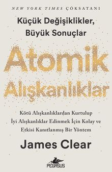
Clear, karmaşık konuları günlük yaşamda ve iş hayatında kolayca uygulanabilecek basit davranışlara indirgeme konusundaki başarısıyla tanınmış bir isim. Atomik Alışkanlıklar kitabında, iyi alışkanlıkları kaçınılmaz, kötü alışkanlıkları ise imkânsız hale getirmek için kolay anlaşılır bir kılavuz yaratmak amacıyla biyoloji, psikoloji ve nörobilim alanlarında doğruluğu kanıtlanmış fikirlerden faydalanıyor.
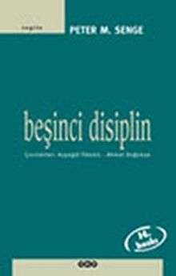
Sorunları parçalara ayırmaya, dünyayı bölümlemeye daha çok küçük yaşlardan alıştırılırız. Her ne kadar bu, karmaşık işler ve konularla daha kolay baş edebilmemizi sağlarsa da karşılığında görünmeyen, büyük bir bedel öderiz. Bundan böyle eylemlerimizin sonuçlarını göremez olur, daha ileri bir aşamayla bağlantısını kurma yeteneğimizi de yitiririz. Resmi, bir bütün halinde görme çabasına girdiğimizde ise zihnimizde parçaları yeniden bir araya getirmeye, tüm parçaları sıralayıp düzenlemeye çalışırız. Oysa bu boşuna bir çabadır, kırık bir aynanın parçalarını birleştirerek gerçek görüntüye ulaşamayız. Beşinci Disiplin'de sunulan araçlar ve düşünceler, dünyanın birbirinden ayrı, birbiriyle ilişkisi bulunmayan güçlerden yaratıldığı yolundaki yanılsamayı yıkmak içindir. Bu yanılsamadan vazgeçtiğimiz gün "öğrenen örgütler"i kurabiliriz. Bu tür örgütlenmelerde kişiler istedikleri sonuçlara ulaşabilmek için kapasitelerini sürekli genişletirler. Yeni ve coşkulu düşünme tarzları beslenir, kolektif özlemlere gem vurulmaz. İnsanlar, sürekli olarak nasıl birlikte öğrenilebileceğini öğrenirler.
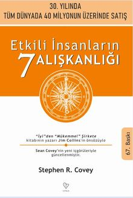
Kişisel, mesleki ve ailevi sorunların çözümünde ilke merkezli bir yaklaşım benimseyen ve toplam kalite anlayışının öncülerinden olan Stephen R. Covey, çarpıcı örneklerden yola çıkarak, aşama aşama, insana yaraşır biçimde dürüst, uyumlu, huzurlu, başarılı bir yaşam için değişime ayak uydurmamızı sağlayan alışkanlıkları belirliyor, değişimin yarattığı fırsatlardan yararlanabilmek için gerekli olan bilgelik ve güce ulaşmanın yollarını gösteriyor.
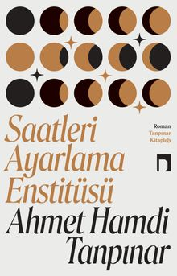
Ahmet Hamdi Tanpınar, Saatleri Ayarlama Enstitüsü’nde Hayri İrdal, Halit Ayarcı, Dr. Ramiz ve ötekilerin yaşantı ve eylemleriyle modern bir Türkiye alegorisi inşa ediyor. Zamanlar ve yaşantılar arasından geçiş krizlerinin insan ve toplumdaki karşılıklarını bürokrasi ironisi üzerinden, derinlikli bir entelektüel arka planla inşa ederken, hüznün müstesna bir mizah şöleniyle nasıl aşılabileceğinin de imkânlarını sunuyor. Saatleri Ayarlama Enstitüsü, dünün olduğu gibi, bugünün ve geleceğin romanıdır.
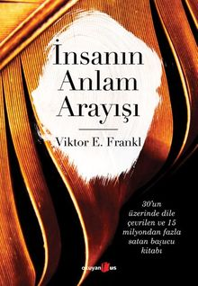
20. yüzyılın önde gelen psikiyatrlarından Viktor Frankl, otuzun üzerinde yabancı dile çevrilen ve bütün dünyada 12 milyondan fazla satan İnsanın Anlam Arayışı’nda, kurucusu olduğu logoterapinin ilkelerini, İkinci Dünya Savaşı sırasında bir toplama kampındaki deneyimleri eşliğinde anlatmaktadır. Okurlar, Frankl’ın tasvir ettiği toplama kampının, dünyayı daha büyük bir hapishane olarak kavramamızı sağlayacak parlak bir metafora dönüştüğünü fark edecektir. Gasset, Heidegger ve Sartre’dan aşina olduğumuz düşünceler ışığında, varoluşun çetin koşullarında “anlam”ı keşfetmemize yardım edecek süreci anlatan Frankl, “İnsanı insan yapan nedir?” sorusuna da yanıt vermeye çalışıyor… “Gerçekten ihtiyaç duyulan şey, yşama yönelik tutumumuzdaki temel bir değişmeydi. Yaşamdan ne beklediğimizin gerçekten önemli olmadığını, asıl önemli olan şeyin yaşamın bizden ne beklediği olduğunu öğrenmemiz ve dahası umutsuz insanlara öğretmemiz gerekiyordu. Yaşamın anlamı hakkında sorular sormayı bırakmamız, bunun yerine kendimizi yaşam tarafından her gün, her saat sorgulanan birileri olarak düşünmemiz gerekirdi. Yanıtımızın konuşma ya da meditasyondan değil, doğru eylemden ve doğru yaşam biçiminden oluşması gerekiyordu. Nihai anlamda yaşam, sorunlara doğru çözümler bulmak ve her birey için kesintisiz olarak koyduğu görevleri yerine getirme sorumluluğunu almak anlamına gelir.”
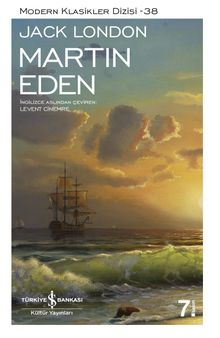
Jack London’ın yarı otobiyografik romanı Martin Eden, 20. yüzyıl başında sosyal ve ideolojik meseleler ağırlıklı içeriğiyle Amerikan edebiyatında büyük ölçüde kabul görmüştür. London farklı sınıflar arasındaki zihniyet ve değer farklarını gözlerimizin önüne sererken, statü ve servetin Amerikan toplumundaki hayati önemine işaret eder. Romanın ana temalarından biri, başarı ve refah yolunun sosyal sınıf farkı gözetilmeksizin herkese açık olduğu şeklinde özetlenebilecek Amerikan Rüyası’dır. Ya da bu idealin yarattığı muazzam hayal kırıklığı… London, romanı bir sanatçının çıraklıktan olgunluğa geçiş sürecini işleyen Künstlerroman geleneğinde yazmıştır. Martin’in aşkı uğruna eğitimsiz genç bir işçiden başarılı ve rafine bir yazara dönüşüm mücadelesini anlatır. Kahramanı hedefine ulaştığında ise motivasyonunu ve heyecanını çoktan yitirmiş, trajik bir sona doğru sürüklenmektedir artık…
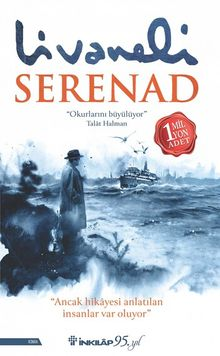
II. Dünya Savaşı sırasında batırılan bir mülteci gemisinin hikâyesine dayanan bu etkileyici romanda, Almanya doğumlu yaşlı bir profesör, sevgili karısını en son gördüğü yeri ziyaret etmek için Amerika’dan İstanbul’a gelir. Maya Duran, İstanbul Üniversitesi’ndeki zorlu işi ile genç bir oğul yetiştirmenin zorluklarını dengelemeye çalışan bekar bir annedir. Maya, üniversitenin daveti üzerine gelen Prof. Maximilian Wagner’i ağırlamakla görevlendirilir. Başta, etrafında gelişen olaylara ve Profesör’e karşı kayıtsız görünse de altmış yıllık bu esrarengiz hikâye sayesinde kendi kökleriyle ilgili üstü kapatılan pek çok karanlık gerçeği yavaş yavaş öğrenir. Yaklaşık 800 Yahudi mültecinin kendilerini Filistin’e taşıyan geminin Türkiye kıyılarında torpidolanması sonucu hayatını kaybettiği 1942 Struma felaketinden esinlenen Serenad, hem dokunaklı bir aşk hikâyesi hem de krizdeki insan ilişkilerinin gücünün unutulmaz bir anlatısı.Pek çok dile çevrilen, özellikle İngilizce edisyonuyla dünyanın dört bir yanında okurlarıyla buluşan Serenad,müzik, edebiyat ve yakın tarihin iç içe geçtiği bir Livaneli romanı.
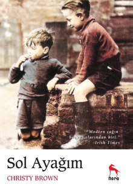
Doğuştan beyin felçli olan Christy Brown, konuşmasını ve hareketlerini kontrol edemiyordu. Ama zekâsı ve cesareti onun okuma ve yazmayı, resim yapmayı ve daktilo kullanmayı öğrenebilmesini, hatta bu kitabı yazabilmesini sağladı. Christy Brown, kendi yaşam öyküsünü kaleme aldığı bu kitabında bütün bunları öğrenebilmek için sol ayağını kullanarak nasıl büyük bir mücadele verdiğini ve hayata nasıl tutunduğunu anlatıyor. Yazarın, bu kitabın devamı niteliğinde sayılabilecek “Her Gün Hüzün” adlı başka bir kitabı daha bulunuyor. Sol Ayağım, Christy Brown’ı Daniel Day-Lewis’in canlandırdığı aynı adlı, çok başarılı bir filmle beyaz perdeye de uyarlanmıştır.
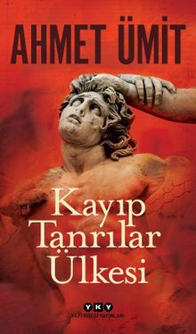
Ahmet Ümit’ten polisiyeyi arkeoloji ve mitolojiyle harmanlayan usta işi bir roman. Berlin Emniyet Müdürlüğü’nün cevval başkomiseri Yıldız Karasu ve yardımcısı Tobias Becker, göçmenlerin, işgal evlerinin ve sokak sanatçılarının renklendirdiği Berlin sokaklarından Bergama’ya uzanan bir macerada, hayatı ve insanları yok etmeye muktedir sırların peşinde bir seri cinayetler dizisini çözmeye çalışıyor. Soruşturmanın Türkiye ayağında sürpriz bir ismin olaya dahil olmasıyla heyecanın dozu gitgide artıyor. Kayıp Tanrılar Ülkesi, Zeus Altarı ve Pergamon Tapınağı’nın gölgesinde mitlere günümüzde yeniden hayat verirken, suçun çağlar ve kültürler boyu değişmeyen doğasını bir tokat gibi yüzümüze çarpıyor. “O yüzden unuttuk dediğiniz yerden başlayacağım. Unutmanın bedelini ödeyecek unutanlar. Cezaların en şiddetlisiyle ödüllendirilecek saygısızlık yapanlar, kalbi yerinden çıkarılacak beni kalbinden çıkaranların, yüzlerinin derisi yüzülecek benden yüz çevirenlerin…”
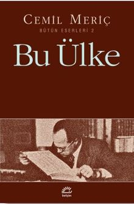
Meriç’in “aynı kaynaktan fışkırdılar” dediği eserler dizisinin önemli bir halkası. Bir çağın, bir ülkenin vicdanı olmak isteği Meriç’in bütün çabasına her zaman yön vermiştir: “Bu sayfalarda hayatımın bütünü, yani bütün sevgilerim, bütün kinlerim, bütün tecrübelerim var. Bana öyle geliyor ki, hayat denen mülakata bu kitabı yazmak için geldim; etimin eti, kemiğimin kemiği.” Bu Ülke, Meriç’in sürekli etrafında dolandığı Doğu-Batı sorunu yanında, sol-sağ kutuplaşmasına ve kalıplaşmasına ilişkin önemli tesbit ve aforizmalarını da içeriyor.
Diğer kitap önerileri zamanla eklenecektir.